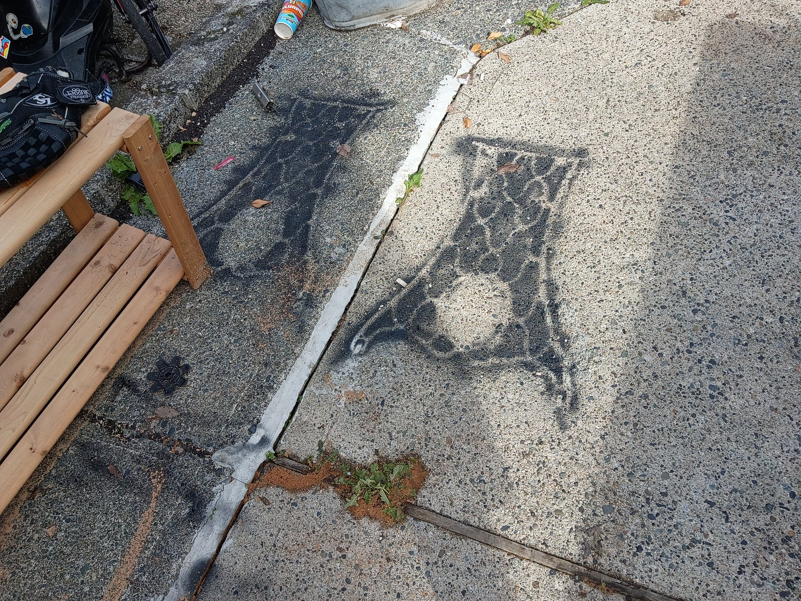

Photo 1
Concrete slabs — black markings
Estimate scope: Remove the visible black spray-painted writing and overspray-shaped marks from the concrete slabs. Quote the proposed coating-safe method, a test area, surface protection, rinse/cleanup, and any remaining shadow separately.
Itemize labour, materials, minimum charge, tax, and total.